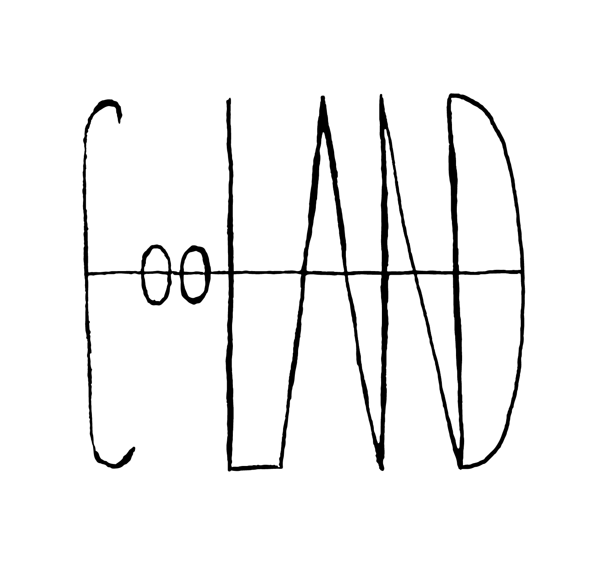

10. září 2015 / “Rozhovor ve Svatojánu”
Přijali jsme pozvání od Evy Francové do Svatojánu. Ze setkání vznikl rozhovor, který se týká naší iniciativy o ochranu české krajiny a jak jinak o KPZ.
http://rozhovoryvesvatojanu.blogspot.cz/
27. května 2016 / Občanské noviny
Reportáž o nás a o tom, co děláme:
http://www.ceskatelevize.cz/porady/10800462866-obcanske-noviny/216562248430018/
1. října 2014 / Učíme se filmem
O projektu propojení filmů a vzdělávání, kde se CooLAND zabýval tématem Prostupnost krajiny:

